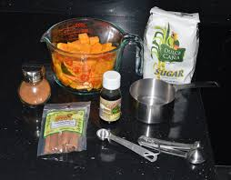
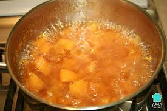
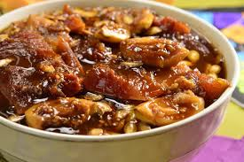
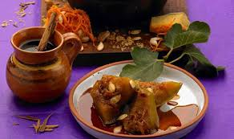

Cuidadosamente, parte la calabaza a la mitad, verticalmente. Con una cuchara, retírale las semillas y hebras. Pártela en trozos de 3-4 pulgadas.
Prepara el jarabe calentando la taza de agua, el piloncillo, la canela y la sal en una cacerola grande a fuego lento. Tapa la cacerola y deja cocinar,
revolviendo de vez en cuando, hasta que el piloncillo se haya disuelto completamente.
Coloca los trozos de calabaza en la cacerola con el jarabe, con la cáscara hacia abajo. Tapa la cacerola de nuevo y sigue cocinando a fuego
lento, bañando los trozos de calabaza con el jarabe de vez en cuando, por 30-45 minutos, o hasta que la calabaza esté completamente cocida. Deja enfriar ligeramente.
Coloca 2-3 trozos de calabaza en un plato y baña con un poco del jarabe restante.




La risa es como el postre,
para ella siempre hay hueco"